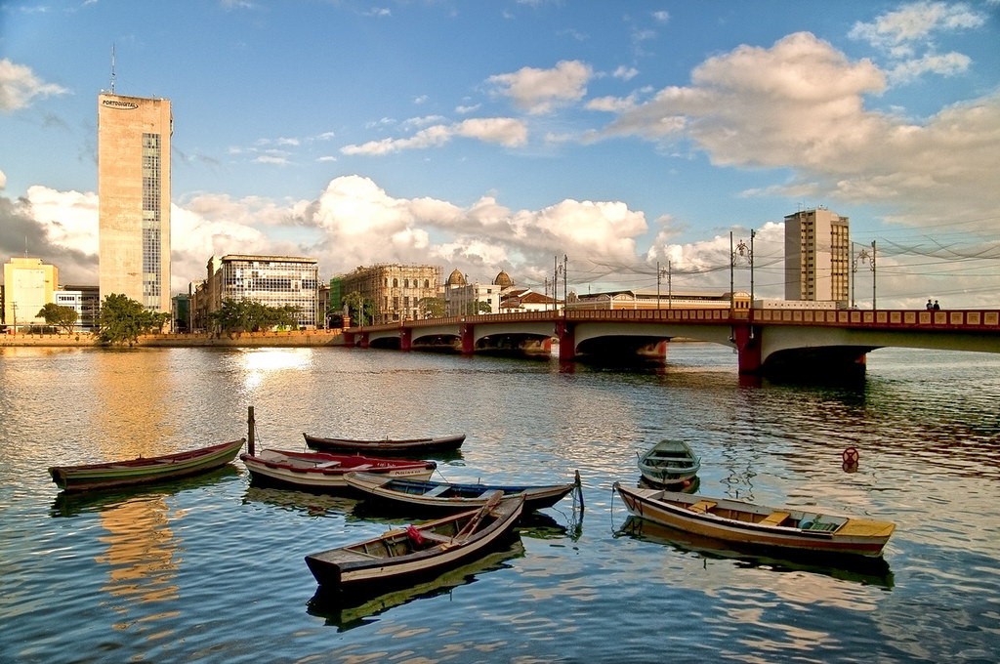

Praça do Marco Zero
A Praça do Marco Zero é uma área ampla e aberta localizada nas proximidades do Marco Zero, no bairro do Recife Antigo. É um local de encontro popular para moradores e turistas, com uma bela vista para o Rio Capibaribe.

Ponte Maurício de Nassau
A Ponte Maurício de Nassau é uma das pontes mais famosas do Recife, ligando o Recife Antigo à Ilha de Antônio Vaz, também conhecida como Ilha de Santa Isabel. A ponte oferece uma vista panorâmica deslumbrante da área circundante.
